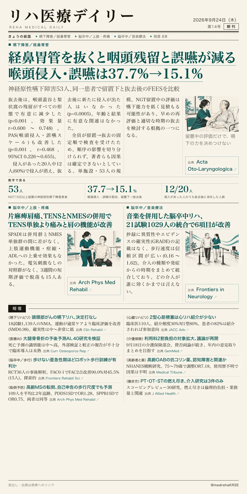
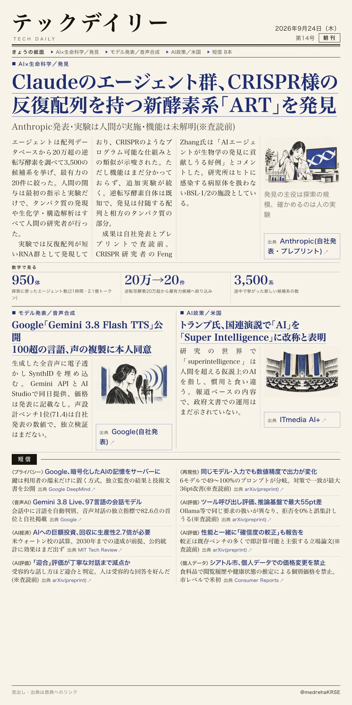

リハ医療デイリー
経鼻胃管を抜くと咽頭残留と誤嚥が減る 喉頭侵入・誤嚥は37.7%→15.1%
神経原性嚥下障害53人、同一患者で留置下と抜去後のFEESを比較
経鼻胃管(NGT)が咽頭期の嚥下に影響するかを調べた前向き研究。NGTを15日以上留置している神経原性嚥下障害の53人に、嚥下内視鏡検査(FEES)を留置したままと抜去後30分以内の2回行い、IDDSIレベル1・3・5の3形態で比べた。

テックデイリー
Claudeのエージェント群、CRISPR様の反復配列を持つ新酵素系「ART」を発見
Anthropic発表・実験は人間が実施・機能は未解明(※査読前)
Anthropicが9月23日、Claudeのエージェントが新しい酵素系「ART(array-associated reverse transcriptases)」を見つけたと発表した。細菌に感染するウイルスが持つ、逆転写酵素・相方の遺伝子・CRISPRに似たDNA反復配列の3点セットだ。
